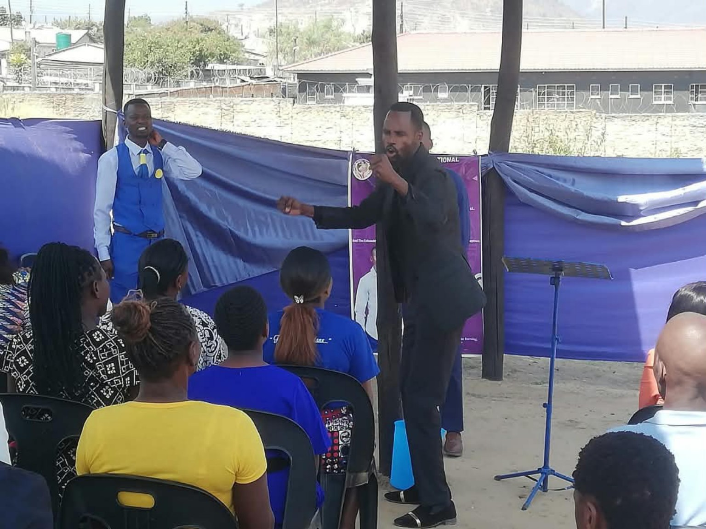
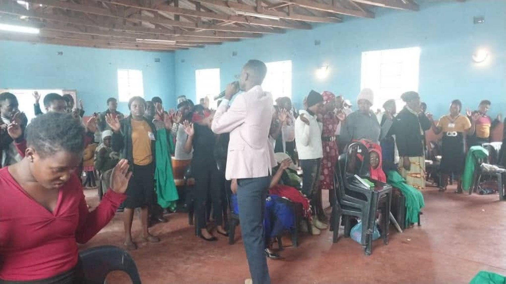
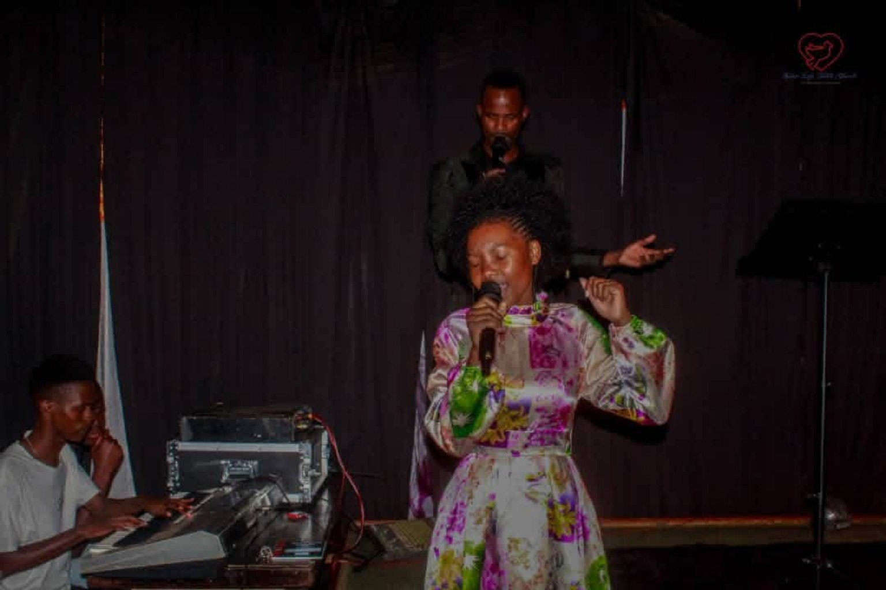
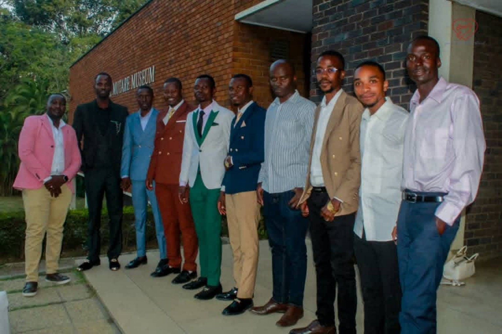

MEDIA & STORIES
See the mission. Tell the story.
Photo galleries and project visuals can help supporters see where the ministry is going and what the centre vision represents.
MISSION IN ACTION
Outreach, worship and team moments.




STORY ARCHIVE
Turn every outreach into a testimony.
A professional ministry site can publish a dedicated story for each outreach: location, date, purpose, team, photos, testimony, prayer needs and follow-up.
The need, the Gospel focus, the people served, what happened, testimonies, photos and what happens next.
Yes. Future updates can show project milestones, confirmed campaign totals, construction progress and prayer requests.
Yes. You can later add YouTube/Vimeo sermons, short testimonies, campaign updates and centre presentations.